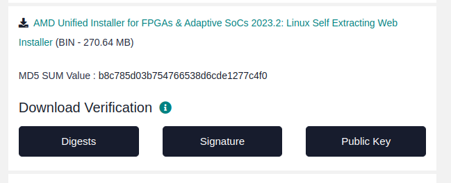

Vivado
Note
This installation instruction is a shortened version of the full instructions provided by the author referred below
Installation
Dependencies
If you have not previously installed any versions of Vivado on your machine, be sure to add the 32-bit architecture and changing the system shell from dash to bash:
sudo dpkg-reconfigure dash
sudo dpkg --add-architecture i386
It is theoretically possible to install all of these package dependencies at once in a single command line of apt-get install. However, I’ve found the best chance of avoid weird issues is to use the following sequence:
sudo apt-get install gparted xinetd gawk gcc net-tools ncurses-dev openssl libssl-dev flex bison xterm autoconf libtool texinfo zlib1g-dev
sudo apt-get install iproute2 make libncurses5-dev tftpd libselinux1 wget diffstat chrpath socat tar unzip gzip python3 tofrodos lsb libftdi1 libftdi1-2
sudo apt-get install lib32stdc++6 libgtk2.0-0:i386 libfontconfig1:i386 libx11-6:i386 libxext6:i386 libxrender1:i386 libsm6:i386 tree openssh-server
sudo apt-get install debianutils iputils-ping libegl1-mesa libsdl1.2-dev pylint python3 cpio tftpd-hpa gnupg zlib1g:i386 haveged perl xvfb
sudo apt-get install gcc-multilib build-essential automake screen putty pax g++ python3-pip xz-utils python3-git python3-jinja2 python3-pexpect
sudo apt-get install liberror-perl mtd-utils xtrans-dev libxcb-randr0-dev libxcb-xtest0-dev libxcb-xinerama0-dev libxcb-shape0-dev libxcb-xkb-dev
sudo apt-get install util-linux sysvinit-utils google-perftools patch diffutils ocl-icd-libopencl1 opencl-headers ocl-icd-opencl-dev
sudo apt-get install libncurses5 libncurses5-dev libncursesw5:amd64 libncursesw5-dev libncurses5:i386 libtinfo5 libstdc++6:i386 libgtk2.0-0:i386 dpkg-dev:i386
Install Cython
pip install cython
sudo apt update
sudo apt upgrade
Note
If prompt show this:
Defaulting to user installation because normal site-packages is not writeable
Requirement already satisfied: cython in ./.local/lib/python3.10/site-packages (3.0.10)
The output you provided indicates that Cython is already installed on your system!
USB Port Access for User
If you have been using USB devices already with your Ubuntu installation this step can be skipped. However, a fresh install of Ubuntu needs to have you user added to the dial out group so Vivado can access the USB ports of the machine:
sudo adduser $USER dialout
Download Vivado
Go to Vivado to get download link
Select version of the installer below and log in with your AMD website credentials when prompted. Provide you information as necessary and click download.
Then you have file FPGAs_AdaptiveSoCs_Unified_2023.2_1013_2256_Lin64.bin
Invoke commands below
chmod +x FPGAs_AdaptiveSoCs_Unified_2023.2_1013_2256_Lin64.bin
sudo ./FPGAs_AdaptiveSoCs_Unified_2023.2_1013_2256_Lin64.bin
The GUI for installation will appear. Follow it to complete the installation process.
Note
Select Vivado Enterprise
If your capacity is not much, just select kintex7 and its stuff
In this instruction, I select
/hometo store my installation.
Close the Xilinx Information Center window to exit.
To run vivado, just invoke commands below
source /home/Vivado/2023.2/settings64.sh
vivado
Add vivado to path
export PATH=$PATH:/path/to/vivado/bin
Get trial license
Run vivado then go to Help, select Manage license and tick trial 30 days and Process now.
A window will appear, just follow steps and get the license.
Uninstall Vivado
First go to your Xilinx instalation folder, then look for xsetup binaries:
<Xilinx_installation_folder>$ find . -name xsetup
Outputs would correspond to all installed Xilinx application and their xsetup binaries.
For the Xilinx application you want to Uninstall, go to the folder where xsetup is located for that application and run:
<Xilinx_program_you_want_to_delete_folder>$ sudo ./xsetup -Uninstall
References
[1]. Vivado, Vitis, & PetaLinux 2023.2 Install on Ubuntu by Whitney Knitter
[2]. Step-by-Step Guide: Installing Vivado 2022.1 ML Edition on Ubuntu 20.04 Linux and Windows 10